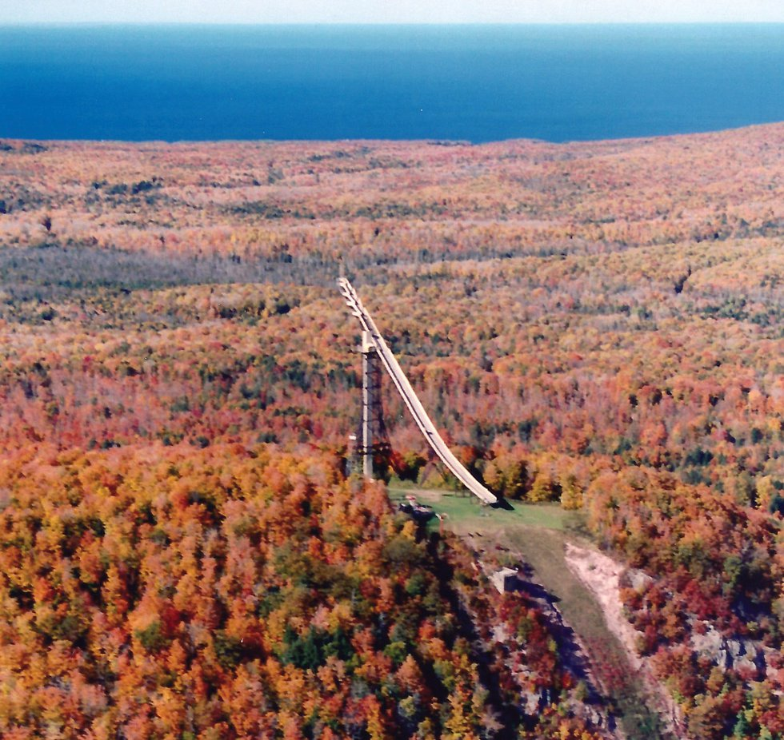

5 Bigger Hills
5.1 Circus Acts
Early 1900’s ski jumpers persistently encouraged the perception of being bold and daring stuntmen, which they were. It was common for a carnival like setting attracting huge paying audiences. No less famous than P.T. Barnum’s circus incorporated ski jumping into their early venues. A professional ski jumping association actually formed in 1929, but disbanded by 1934, not for lack of demand or paying audience, but for lack of available, uninjured jumpers.
Thrills and spills were promoted as the reason to come and see exhibition riders attempt somersaults and other amazing gymnastic feats with ski equipment and scaffold construction that would astound the most fearless jumper today. To attract audiences, they reinforced the stereotype of a dangerous sport. Pictures of various ski jump scaffolds, for exhibitions of that era, attest to the laughably flimsy construction that would not pass any safety protocols in today’s litigious society.

Henry Hansen performing his signature somersault at some unknown location, sometime in the 1940’s. He was one of less than a handful that did this amazing stunt over a hundred times around the country. Fellow ski jumpers would call him ‘crazy in the head’. He claimed no serious injuries. Note the rickety super steep temporary scaffold construction with no side rails and at most a 4 foot wide inrun. And he did that with full size, heavy hickory jumping skis.
Even if fear entered a ski exhibitionist’s mind, these macho daredevils of yesteryear couldn’t surrender to it amidst their ski jumping buddies and responsibilities to the paying public. But, some level of trepidation had to be a companion for any sane daredevil while tiptoeing up a matchstick scaffold.

Temporary inrun and landing hill scaffolds for competitive or exhibition jumping were built in population centers, such as Chicago’s Soldier Field, the Hollywood Bowl, the LA Coliseum, and even a few indoor venues, like New York’s Madison Square Garden. The temporary ski jump constructed at Soldier Field hosted over 60,000 spectators and 140 jumpers. No, this is not photoshopped.

In addition to jumping competitions, acrobatic exhibitions were performed on these hastily constructed jumps. Four ski jumpers from Ironwood contributed to at least one Soldier Field exhibition by performing the diamond formation. The diamond formation involved four ski jumpers proceeding simultaneously down the inrun and through the air. The formation consisted of a lead skier traveling down the center of the inrun track like usual, followed immediately by two side by side (wingmen) skiers, and trailed by a fourth person.
The possibility of a mishap multiplied if the wingmen came too close to the inrun walls or collided with each other. Since both wingmen had one ski riding in rough snow outside of the established inrun track, it would be an uncomfortable approach to the take-off. Being less than a foot apart at take-off, the wingmen had to ensure that their ensuing flights did not converge, but diverged. Of course, if any of the first three riders fell, the fourth and last jumper could be joining a pileup.
One fine day immediately following the conclusion of a Wolverine meet in 1976, someone had the wild hair idea that we should enter carnival mode and recreate the diamond stunt. For our formation, I was nominated as the lead rider which is the easiest job (if you didn’t fall). Before launching down the inrun, my cohorts apprehensively emphasized to me to stay crouched after landing to maintain speed and avoid being caught from behind.
And away we went. There were no collisions, but since I was the lead rider, I couldn’t see what was transpiring behind me. By the time I had landed and arrived at the outrun to peek behind, I saw a splintered diamond far behind. One wingman had spun out, but the tail rider was able to sidestep him. It wasn’t a professional exhibition and would have needed more practice and coordination to resemble what local ski jumping stuntmen performed 40 years earlier in front of a huge Chicago crowd. And to think that the USAF Thunderbird pilots keep four jets within 18 inches of each other in their diamond at the speed of sound! Our diamond in the rough was fun. We never tried that again.
5.2 Crazy Long
Another more common long-standing tradition in regional ski jumping meets was the long-standing jump. After the formal competition concludes, some tournaments offer jumpers one more optional ride to compete for long-standing jump honors where distance matters, but not style. Without concern for preserving style points, a more aggressive go-for-broke approach could be attempted, even though the longest jumps are generally accompanied with superior style.
After completion of the formal meet, many jumpers are prone to forego the long-standing jump competition. They may want to get an early start on the Sunday evening trip home, especially if they were not in the running for awards from the formal competition. And, if they had no realistic expectation of cranking out an exceptionally long long-standing jump, it was time to put the skis away. But, with formal tournament tension dissipated, the better jumpers often enjoyed one more ‘free’ ride. Pragmatically, the long-standing jump competition also filled time while the official tournament results were being compiled.
By the usual rules of ski jumping and even in a long-standing competition, one cannot fall or touch snow with any body part. And, even if the longest standing jump of the day exceeds the existing hill record, it does not change the official hill record, since the record only applies to official tournament jumps.
At the completion of a Wolverine meet one Sunday afternoon in 1980, the organizers staged a long-standing competition. Being an average ‘B’ class senior jumper now that I had graduated from the junior class the prior year, it would be unusual for me to compete in the long-standing jump against the U.S. national team and other ‘A’ class riders. However, an unexpected loophole was created, stipulating that long-standing competitors could start from any gate of their choosing. So, while I had milled around the middle of the senior ‘B’ class pack during formal competition, the free selection of a starting gate presented an opportunity.
When I got near the top of the scaffold and walked past the U.S. team members on my way to the top gate, they were incredulous. Kip Sundgaard, one of the U.S. national team jumpers, peered up from his lower gate and blurted “You’re crazy”. I accepted his statement as a badge of courage, insanity, or both. Having always used the top gate during practice days at Wolverine and rarely threatening the absolute bottom of the landing hill, I thought nothing of it. Of course, he (or they) could have used the top gate, too, but elite jumpers would have exceeded the safe landing hill distance.
With the additional speed of a well-worn, icy inrun track at the end of a tournament and my good take-off, I catapulted over the knoll higher than ever before. There was acute awareness that this trip was exceeding normal fly zones. When Wally used to say stretch out over your skis and sight the bottom of the hill, I didn’t picture it coming up so quickly to meet me. Unaccustomed to the view, I prematurely backed out of flight position. The result was that I landed so much shorter than the initial trajectory offered. By landing far back on my heels, I spun out harmlessly, but disappointedly, at the bottom.
A top tier jumper accustomed with toying the extremes of landing hills would have exploited the trajectory, nailing a jump well beyond the hill record (albeit an unofficial distance as mentioned). What a missed opportunity for me! On my walk up the hill afterward, I was saluted by Bob Shea saying “You had so much height you looked like Checko.” Chester ‘Checko’ Kusz, brother of Wally, was a powerfully stocky and exceptionally accomplished jumper during the heyday of an earlier generation of Ironwood jumpers.
5.3 Spotty Training
There was no organized off-season training in the local Gogebic Range ski jumping club in the 70’s. I assumed that other ski jumping clubs with a sizable number of junior and senior jumpers had a comprehensive off-season training regimen. I am sure that was the case for the bigger clubs, especially if inclined to mimic the national team members that grew out of those clubs. I would overhear that the national team jumpers were wunderkinds of gymnastics and trampolining. Foreign to me, it was a cross training activity that instilled awareness and control of body position while in the air.
Off-season for me meant doing other sports, mostly baseball and basketball. I also weathered a season of high school freshmen football. The most memorable moment was getting hit so hard in a one-on-one blocking drill by the star junior running back that it broke my face mask and left me in a daze. I did remember it, so it was memorable!
The first attempt at intentional off-season training involved an unremarkable sophomore season of cross country running. Later, when about to play a pick-up baseball game with the cross country team and its coach, he snarked “I hope you’re better at baseball than running”. Hah! After abandoning those experiments by my junior year, running sprints up the 36° slope of the Wolverine scaffold in the middle of hot summer days seemed like a worthwhile investment.
With credit for ingenuity, around 1975, John Kusz welded together a unique leg press contraption approaching the size of a Yugo (not quite but) which imparted resistance in the vertical and partly forward direction simulating one lifting out of the inrun position. As a result, I am sure that my leg strength leading into that ski season was as great as ever.
As much as it enhanced leg strength, in retrospect it may have degraded my explosiveness and quickness in transition to flight position crucial for ski jumping glory. Or, maybe I was rationalizing a decades old argument then prevalent in sports like baseball which used to frown on weight lifting, but is now an integral part of a comprehensive twelve month training regimen. Whether coincidence or unrealistic personal expectations, my jumping season that followed was disappointing. Yet, the pros and cons of sport-specific training which approximates, but does not replicate, what the body is asked to do in a targeted sport has been rigorously debated in coaching circles.
In September 1977, I was honored to be invited and participate in a five day Junior Development training camp at Madison, Wisconsin (for only $90!). With most of the expenses paid by the USSA (and complimented by GRSC), it was a progressive initiative for the purpose of cultivating candidates for the future national team. Twenty of the most promising Central Division junior jumpers were invited.
Madison (Middleton) was at the forefront of artificial ski jumping surfaces in the upper Midwest in the 70’s. The early generation plastic inrun and landing hill consisted of foot long ‘hula skirt’ fiberglass strands attached to a metal underlay resembling a chain link fence. Water was fed down the inrun track to ensure slipperiness. Instead of following the centuries old process of waxing skis, it was advised to apply green Palmolive brand dish soap to our skis to enhance inrun speed. Someone’s kitchen counter may have been missing the soap bottle that now sat on a ledge at the bottom of the scaffold.
We were advised to not use our best skis because unlubricated friction could occur at high speeds, which would cause fiberglass film to adhere permanently to the relatively soft plastic underside of the skis. Since I only had one pair of skis, I had no choice, but they were not worse for wear after the experience. However, one of the jumpers did fall and break fingers caught in the metal mesh underlay of the landing. Ouch.
Fortunately, the technology for artificial inrun track surfaces, skier’s inrun positioning and equipment have evolved considerably since the mid-20th century. You can play your own ‘Spot The Difference’ exercise when viewing the contrasting illustrations below.
Although not sophisticated compared to athletic training camps today, the opportunity to participate in the 1977 training camp with my regional peers was a great experience. It introduced many of us to dry land training and the first ski jumping experience on a plastic hill. It was surreal to be jumping in 75° weather. We rode the 20m hill for the majority of the camp, but some of us were allowed to ride the 60m for a couple of days.


As a mild disappointment, I did expect more coaching input on technique. Admittedly, I was too shy to push for it. With a contingent of nationally known coaches, the only personal feedback that I received was that “you have strong legs, you’re a strong jumper”. That was nothing new. Even Mom would always say “you and your sister have strong Perttula legs”, which were, of course, inherited from her side of the family.
Anyway, I had received this well intentioned “strong legs” compliment several times over the years from other ski jumping parents or coaches. At one Ishpeming meet in 1974, the father of one of my jumping peers unintentionally gave me the backhanded compliment of “You get so much height off the jump. If only my son could do that, he would be unbeatable”. I replied “Ah, OK, thanks.”
I did leave Madison with confidence that I could compete on an equal basis with up-and-coming Central Division peers. Perhaps the underlying objective of the camp staff was to observe and judge the potential of each camper. This was before highspeed cameras, air tunnels, computational fluid dynamics, and other detailed analytics became increasingly available to national teams in the 21st century. I had to accept that any coaching insight would be limited with only a few days exposure to a squad of junior jumpers mostly unfamiliar to them.
5.4 Hill Top Strategy
Beside flying through the air, the next best experience for a ski jumper may be the anticipation at the top of the inrun scaffold before cascading down the inrun. After navigating the climb up the 35° - 38° icy ‘cattle chute’, strapping on skis, and waiting in queue for your turn, life becomes simpler. The focus is on adjustments to make relative to previous ride(s), and visualize the next jump being the best jump of the day. Then, as you have done many times before, you launch down the inrun, armed with a positive expectation, not fear.
With a half dozen or so jumpers in the immediate queue at the top of the scaffold, the banter is unique to the sport. In ski jumping, you are competing against the hill and yourself, more than the competitor next to you. In this respect, it is akin to golf or swimming where you are applying your skills to the physical surroundings, not directly against other competitors. As a courtesy, one jumper may note to the others an abnormal snow condition in the inrun track or landing hill, for example. “Have a good one” is just one commonly expressed ‘final’ encouragement.
While some jumpers continue to chatter at the top of the scaffold, it can also be a sanctuary of sorts, while others quietly check their equipment and mentally follow their pre jump ritual. It is revealing that as the hill size gets bigger, there is considerably less conversation at the top.
Although inaccessible to the public during a tournament, the view from the top of the scaffold is arguably the best location to watch ski jumping, besides the judges’ stand located on the side of the landing hill. As the jumper leaves the take-off, rises over the knoll, and descends out of view, an experienced ski jumping observer from the top can quickly ascertain if the ride was indeed a ‘good one’, even if he can’t actually see the rest of the ride.
Of course, if the jumper doesn’t reappear a few seconds later at the distant outrun, then the ride was less than a ‘good one’. And if the flight was already going awry before he descended out of sight, it would not be surprising if the jumper fell. Whether due to a fall, hill repair, electronic malfunction in the recording equipment, or someone or some dog wandering across the outrun, one had to be mentally prepared while in final queue at the top of the weather exposed scaffold that there could be an extended delay.
A consequential part of a ski jumping tournament is to manage one’s time and activity before and between tournament jumps. On meet day, practice jumps were usually allowed until noon, when the hill was closed for final hill preparations prior to a 1 pm tournament start. During this lull and the 45 minutes or so between subsequent tournament jumps, there are personal strategies to stay warm and loose, while not missing one’s spot in the jumping queue at the hilltop.
If it’s subzero outside, one can’t stay limber if succumbing to the temptation to be comfortable, but inactive in a nice, warm vehicle. Yet, if one starts the journey up the landing hill too early, you’ll be stiffening while waiting at the bottom or top of the scaffold, often in blustery conditions. Awareness of one’s spot in the meet sequence, and progress of the meet has to be managed. At some point, one has to embrace the weather by stretching and moving around, while building readiness for the upcoming high speed experience.
5.5 Zoom With A View
Anyway, the top of most ski jumping scaffolds provides a beautiful panorama. In the hubbub of a ski jumping tournament, most jumpers do not have time to appreciate it. One such commanding view is from the top of Suicide looking down into the parking lot bowl far below.

Another particularly unique view was from the top of the Tri-Norse club’s hill near Wisconsin Rapids. In the early 1900’s, Norwegian immigrants were determined to erect a ski jump on a modestly sized geographical ‘pimple’ in the predominantly flat south central Wisconsin landscape. From the top, one could spin 360° and see nothing but a vast evergreen forest landscape. Similarly, the still active Iola ski jumping complex also exists in the south central Wisconsin farming country. It is yet another example where cultural determination propagates this sport even if a mountainous terrain is nowhere in sight.
Copper Peak is the largest North American ski jump and still the world’s largest artificial ski jump no matter what some other ski jump devotees might advertise. It boasts of gorgeous views of multiple states and Lake Superior from the top of a 240 foot tall tower and 469 foot long inrun. The experienced ski jumper or ski flyer may be reasonably comfortable with a supersized ski flying hill in Europe, since the inruns are usually integrated to superior mountain landscapes. But, it requires a different type of mental fortitude climbing Copper Peak, since it rises high above the surrounding countryside like an amusement park ride on steroids. Fun fact: The tallest ride at Cedar Point, a popular amusement park in Sandusky Ohio, did not surpass the 200 foot height until introduction of the Millenium Force ride in year 2000, or more than 30 years after the Copper Peak tower was built.

One summer early in Copper Peak’s history, a few U.S. ski flyers camped overnight on the tower summit. Other than enjoying the view, that sleepover was intended to psychologically acclimate first time Peak flyers to the unique height prior to the upcoming winter meet. Still, if it happened to be a breezy summer night, it would be a cool customer indeed to get any sleep with the CORTEN steel scaffold swaying up to 18 inches, and fresh U.P. air whistling through the walkways of chain link fencing and open metal floor grating.
Before good ol’ Wolverine was abandoned three decades ago, it also provided a more modest, but inspiring view of Ironwood Township, including a distant peek of Copper Peak, as well as the Big Powderhorn alpine facilities. When training in the summer many decades ago by sprinting up the scaffold deck, the top provided a moment to catch one’s breath and reflect. My sister and I spent a few cherished moments at the top of Wolverine reminiscing about Dad and his love of ski jumping, shortly after his funeral in May 1995.
5.6 Falling Short
While progressing up the junior class ladder before aging out at 19 years old, a natural goal was to compete at the Junior Nationals against the top 50 or so junior jumpers from around the country. The stepping stone to the Nationals was divisional qualifying meets held in the Eastern, Western, Rocky Mountain, and Central Division regions. The Central Division encompassed the U.P., Wisconsin, Minnesota, and Illinois. Its tryouts for the Junior Nationals rotated each year to a different hill. Wolverine happened to be the chosen site in 1977 and 1979, which was convenient for Ironwood jumpers.
In 1977 at age 16, I did not expect to qualify for the Nationals and that mentality all but assured that I wouldn’t, placing a distant 25th at the Central Division tryouts.
The 1978 Central tryouts were held at the intermediate (45m) hill in Westby, Wisconsin. With this event being my next to last opportunity to qualify for Nationals, I was determined to succeed. It was a blessing that Dad could accompany me on the trip, breaking free for two days from his six day work week.
Nevertheless, during practice jumps, I was going nowhere. My jumps were discouragingly below average relative to familiar competitors. So, in a fit of frustration and desperation, and no coach to encourage or rein me in, I experimented with more radical techniques. Eventually, I resorted to literally diving off the take-off, thinking that maybe I was holding back from what’s necessary for a competitive jump. It was another ill conceived idea, in the same class as the half-scaffold Iron Bowl ride nearly a decade earlier.
In this adventure, I resembled a pheasant suddenly hit by a load of birdshot. Seeing that the ride was going to end poorly, I rotated in mid-air so I could land on my side and avoid a face plant. While sliding down the landing hill, I became a slowly spinning roulette wheel. My left ski eventually caught on soft snow, while the momentum of my body continued the spin. It was a rather uneventful fall, except my left ankle hurt like hell when I stood up. Under such twisting forces, the ski binding did not release my boot as expected.
Dad and I discussed it, and I decided to test the ankle by riding only the landing hill. I made it down the hill standing, but couldn’t put any weight on the left ski and struggled to make any kind of turn just to stop at the end of the outrun. I had to withdraw from the tryouts and my next to last opportunity to qualify for the Junior Nationals was kaput. Since it was my left ankle (and our family car had an automatic transmission), I could still drive the 270 miles home. (At that age, don’t we all want to drive? Well, maybe not nowadays).
Neither Dad nor I thought it was anything more than a bad sprain. It proved to be a hairline fracture of the main ankle structure dictating a week lying around waiting for the swelling to subside, then ten weeks in a cast, followed by two more months on crutches, and then several months of limbering up and rejuvenating leg muscles and tendons. I limped through baseball season. But after that, I was ready for the next and last season of junior class jumping.
5.7 Fatherly Pride
I had become distinctly aware of Dad’s extreme pride in his son when as a diminutive 12 year old I had the treat to accompany him on his milkman route one summer day. Despite being the stereotypical Finn of few words, after decades of being responsible for the Wakefield milk route, he seemed to have a congenial relationship with the entire village. After Dad introduced me as his son at the doorstep of a friendly customer, he looked at me and replied to Dad, “With all that you have told me about him, I thought that he would have been a whole lot bigger.”
In later years, I started to realize how disappointed Dad must have been in the few circumstances that he managed to find a work colleague to substitute for him, enabling him to travel to a tournament that ultimately did not occur, or precluded his son’s participation.
The missed opportunity happened more than once for him. A few years earlier he and I had traveled to Iron Mountain for a junior tournament. But, since it was an era well before cell phones existed, we became aware of the cancellation, due to unseasonably warm weather, after we had arrived.
On the way home, he detoured at Crystal Falls, somehow recalling that a small 20m ski jump existed in the community. And sure enough, he found a rickety, old scaffold standing alone with a partially snowed inrun track quickly melting in the 50° weather. If standing under the scaffold that day, one could get a refreshingly cold shower. In his enthusiasm, he tried coaxing me to ride it, a natural motivation for an old school ski jumper that grew up with the motto – see a ski jump, ride a ski jump. With the letdown from the cancelled meet and the haphazard condition of the hill staring at me, I didn’t feel adventurous. I appreciated that a mildly disappointed Dad relented and we just headed home.
A few years later my eyes were more fully opened to Dad’s love of the sport and his son. In one of my last years of jumping, I came home disappointed and sulking from a mediocre practice day at Wolverine. Dad asked how my day of jumping went, but I sloughed off his interest, not giving him the time of day, and he said nothing more. I retreated to my room, when Mom suddenly appeared. In a loving, yet extraordinarily firm stance for her, she let me know that I had hurt him badly.
I tried to not fall short in this regard from then on, but in retrospect I have since realized that he didn’t attend as many of my tournaments in the last few years, whether by the demands of his workplace, his declining health, or other reasons. So, perhaps there will be a ski jumping Field of Dreams penance moment sometime in the eternal future, reuniting father and son to discuss their favorite pastime!